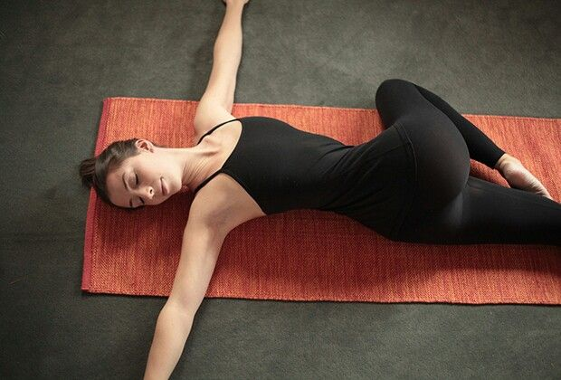

Mediante técnicas aplicadas a los diferentes tejidos y sistemas buscaremos influir sobre el sistema nervioso, el cual es determinante en el comportamiento de nuestra postura al ser elencargado de enviar la información al cerebro sobre la demanda impartida por la persona a sus actividades diarias,laborales y deportivas, asi como la influencia de factores condicionantes como el medio ambiente.
Las disfunciones temporomandiublares y el dolor orofacial son condiciones muy frecuentadas en consulta. Su compleja inervación y anatomía, su relación con diversos sistemas y su alta sensibilidad al estrés hacen que sea necesario una minuciosa evaluación para luego plantear el mejor tratamiento. El tratamiento consiste en aplicar técnicas dirigidas a la compleja musculatura del sistema estomatognático, su inervación, el movimiento cervical y relación con la cintura escapular.

Podemos definir al dolor crónico como aquel que persiste mas alla de 3 meses luego de que la fuente que lo prpdujo inicialmente cumplió su tiempo de recuperación biológica. Es una condición que suele darse en patologias como el cáncer, traumatismos graves como accidentes de tránsito, posquirúrgicos, entre otros. El sistema nervioso central comienza a sensibilizarse y los estímulos externos necesarios para que el dolor se desencadene empiezan a ser cada vez de menos intensidad, por lo que la persona esta expuesta la mayoria del tiempo. Desde la osteopatía y de manera interdisciplinaria, se aborda al paciente con un tratamiento a largo plazo centrandose en educar al paciente sobre su condición, conteniéndolo y dándole herramientas para que afronte de la mejor manera posible esta patología.

Todos sabemos que practicar un deporte tiene múltiples beneficios como mejorar la salud cardiovascular,musculoesquelética, sociabilizar, entre tantas otras. Al ser una actividad demandante de todos los sistemas corporales que comprenden el aparato locomotor, el mismo debe encontrarse en perfectas condiciones para evitar lesiones. Con la osteopatía optimizamos el rendimiento al influir sobre el sistema miofascial, articular y vascular. El trabajo sobre la movilidad articular es de crucial importancia, sobre todo en la base de desplazamiento como son los pies. En deportes de raqueta o golpes con el brazo, es vital una buena coordinación de la musculatura de toda la cintura escapular y sobre todo un buen trabajo del core.